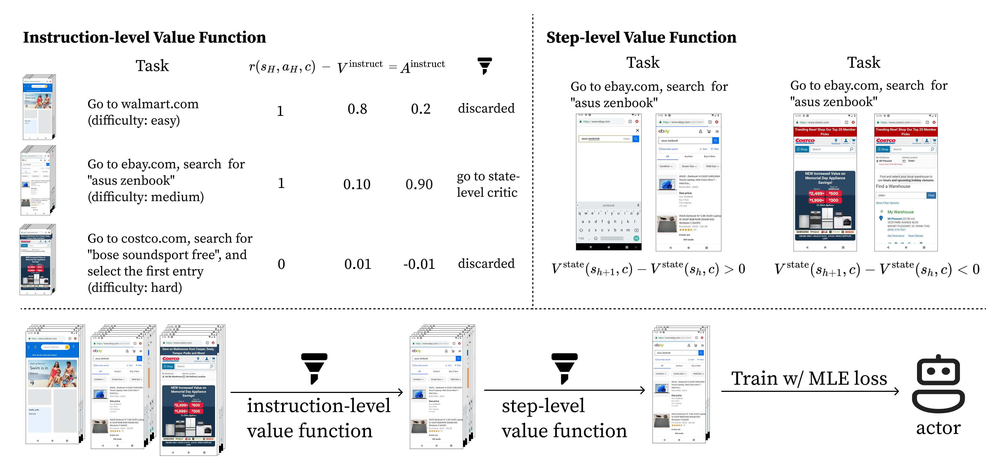

DigiRL: New SoTA for Real-world Digital Agents
Why Reinforcement Learning At All?
We find reinforcement learning significantly outperforms supervised fine-tuning due to the strong stochasticity in real-world environments. To overcome this challenge, we introduce an interactive algorithmic framework with reinforcement learning.
Algorithmic Framework of DigiRL

Learning Curves
We clearly find DigiRL outperforms Filtered BC in the Offline-to-Online learning setting on both subsets of AitW.